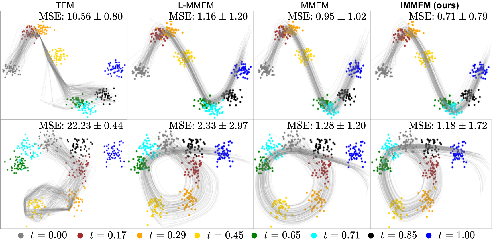
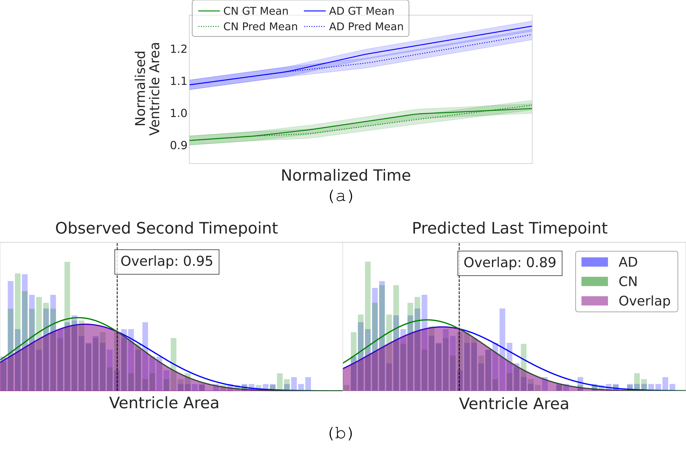

Generative modeling of disease progression from longitudinal neuroimaging requires learning continuous, subject-specific trajectories from data that are high-dimensional, irregularly sampled, and highly sparse (e.g., occasional clinical visits). Standard pairwise transition models fall short in this setting because they do not ensure global trajectory consistency across multiple timepoints. We present Interpolative Multi-Marginal Flow Matching (IMMFM), a novel stochastic generative framework that leverages a piecewise-quadratic interpolation path as a smooth target for flow matching and jointly optimizes a data-driven uncertainty diffusion coefficient.
Results: Synthesis, Stability, and Insight
Synthetic Trajectory Validation
We first validate IMMFM on challenging synthetic datasets with known ground truth dynamics. The experiments involve rapidly evolving distributions with complex curvatures and crossing trajectories that stress-test the model's ability to maintain trajectory coherence.

Figure 2. Synthetic trajectory validation on fast-changing distributions: We test on S-shaped (left) and sigma-shaped (right) trajectories where point clouds evolve through complex geometric transformations. The datasets challenge models with rapid directional changes and distribution crossings. IMMFM (red) significantly outperforms standard flow matching baselines (blue), demonstrating superior tracking of complex curvatures. The improvement stems directly from our quadratic velocity formulation that anticipates future trajectory segments, enabling smooth navigation through geometric complexity that defeats linear interpolation methods.
Following synthetic validation, we evaluated IMMFM across multiple challenging high-dimensional neuroimaging datasets including Alzheimer's Disease Neuroimaging Initiative (ADNI), Multiple Sclerosis (Brain MS), Glioblastoma (GBM), and the baseline Starmen dataset. IMMFM demonstrated state-of-the-art capability in structural synthesis and temporal consistency.
- Fidelity Improvements: Models consistently beat strong baselines over extensive horizons, yielding gains of +1.0%–4.4% in anatomical Dice similarity, +1.5–2.2 dB in PSNR.
- Ablation Drivers: Replacing standard linear paths with the piecewise-quadratic pathway was the single highest contributor to accuracy (up to +3.7% DSC), while our data-driven uncertainty diffusion curbed worst-case boundary errors on erratic GBM cases directly (yielding a >6 pixel Hausdorff gain).
- 3D Volume Scaling: Utilizing the full framework extended seamlessly up to volumetric analysis. 3D predictions lowered inter-subject variability substantially and elevated ADNI target Dice scores to 94.7% (a 3% boost over 2D).
- Computational Efficiency: Despite sophisticated multi-marginal alignment, preprocessing remains practical with registration taking only 6.85 seconds per 128³ volume and 1.12 seconds per 64³ volume for real-time clinical inference.

Figure 4. Left to right examples of ground truth and predictions for MS and GBM showing structural coherence and minimized spatial errors (2nd rows) across diverse modalities.
Long-Range Temporal Stability Analysis
A critical challenge in longitudinal modeling is maintaining prediction quality as forecast horizons extend beyond the training observation window. We systematically evaluate IMMFM's temporal generalization capability by extending predictions up to 4+ years beyond baseline measurements and comparing performance across different patient cohorts.

Figure 6. Temporal generalization robustness analysis across extended forecasting horizons. Left panels: Dice similarity scores vs. prediction horizon (months) for ADNI cohorts, showing IMMFM maintains >85% structural fidelity even at 48-month extrapolations while baseline methods degrade rapidly after 24 months. Right panels: Cross-cohort validation demonstrating consistent performance across AD, MCI, and CN populations. Unlike standard transition flows that suffer from compounding iterative errors, IMMFM's multi-marginal formulation with quadratic velocity smoothing provides inherent regularization that prevents error accumulation. The uncertainty-aware SDE formulation further stabilizes long-range predictions by adaptively modulating stochastic corrections based on local prediction confidence.
Downstream Clinical Utility: Early Alzheimer's Detection
A key clinical application of accurate trajectory forecasting is early disease detection. We test whether IMMFM's generated structural progressions contain clinically meaningful biomarkers for Alzheimer's disease conversion prediction—a critical capability for enabling earlier therapeutic intervention.
Experimental Design: Using only 18-month baseline MRI data, we generate 36-month forecasts and extract ventricle volume trajectories as a key AD biomarker. We then evaluate conversion prediction between Alzheimer's Disease (AD) and Cognitively Normal (CN) subjects using a simple threshold-based classifier applied to the forecasted ventricle expansion patterns.
Clinical Impact: Our method achieves +9.1% improvement (from 71.7% to 80.8%) in AD-CN classification accuracy using only structural image forecasts—no cognitive scores, biomarkers, or AD-specific training. This translates to correctly identifying 8 out of 100 additional future AD converters 18 months earlier, providing crucial lead time for treatment planning and family preparation. Given that dementia affects >55 million people globally and AD represents 60% of cases, even modest improvements in early detection have substantial population-level impact.

Figure 5. Clinical utility demonstration for early AD detection. Panel (a): IMMFM-generated mean ventricle volume trajectories (solid lines) closely track ground truth pathological progressions (dashed lines) across 36-month horizons. AD subjects show characteristic accelerated ventricular expansion (red), while CN subjects maintain stable volumes (blue). The model captures subtle nonlinear progression patterns that linear forecasting methods miss. Panel (b): ROC analysis demonstrating clear distributional separation between AD and CN trajectory forecasts. The forecasted biomarker distributions show minimal overlap (AUC=0.84), enabling confident classification decisions. Importantly, this separation emerges purely from structural image synthesis without requiring cognitive assessments or specialized AD biomarkers, making the approach broadly applicable in clinical settings with standard MRI protocols.